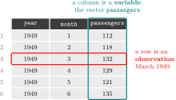

# List all objects in the environment
ls()[1] "pandoc_dir" "quarto_bin_path"# Remove all objects from the environment
rm(list = ls())
# Verify the change
ls()character(0)Find the slides here
# Check current working directory
getwd()
# Set a new working directory.
setwd("C:/Users/YourName/Desktop/AE_2026")
# Verify the change
getwd()
# List files in the working directory
dir()# List all objects in the environment
ls()[1] "pandoc_dir" "quarto_bin_path"# Remove all objects from the environment
rm(list = ls())
# Verify the change
ls()character(0)# Create object "n"
n <- 100
# Print the object in the console:
n[1] 100A function takes one or more objects as input, performs a task, and returns an output. We have already used several, such as sample(), length() and data.frame(). We can also write our own:
ls()[1] "n"# Define the function "square()"
square <- function(x) { return(x^2) }
# Run function on object, store as "result"
result <- square(n)
# Print the result in the console
print(result)[1] 10000ls()[1] "n" "result" "square"# generate vector "age":
age <- sample(18:65, n, replace = TRUE)# Visualize
age # Print object in console [1] 35 20 20 49 34 19 42 57 36 20 19 39 22 35 47 29 52 54 47 28 39 59 47 39 21
[26] 35 52 65 59 38 37 49 41 33 43 23 51 44 51 27 40 59 48 58 20 50 19 51 56 63
[51] 19 59 60 28 48 33 43 51 38 46 29 60 18 65 27 54 19 28 43 51 23 55 37 56 44
[76] 53 54 58 43 36 41 31 57 65 57 18 22 61 50 64 45 56 61 60 61 21 61 59 23 59str(age) # Object type, size int [1:100] 35 20 20 49 34 19 42 57 36 20 ...class(age) # Object type[1] "integer"dim(age)NULLls() # List all objects[1] "age" "n" "result" "square"AirPassengers is a dataset that comes built into R: the monthly totals of international airline passengers, in thousands, from January 1949 to December 1960. Stores information in three vectors:
# Three vectors with one value per month
passengers <- as.numeric(AirPassengers)
year <- as.numeric(floor(time(AirPassengers)))
month <- as.numeric(cycle(AirPassengers))
length(passengers) # 144[1] 144# Access elements of a vector
passengers[1] # first element: 112[1] 112passengers[1:3] # elements 1 to 3: 112 118 132[1] 112 118 132passengers[c(1, 144)] # first and last: 112 432[1] 112 432A dataframe is a two-dimensional object that stores data as a table, with rows and columns:

Every column of a dataframe is a vector, and all columns have the same length. So if we have several vectors of the same length, where position 1 in each vector refers to the same observation, position 2 to the next one, and so on, we can put them side by side as the columns of a dataframe with data.frame(). The three vectors year, month and passengers each have 144 elements, one per month, so together they form a dataframe with 144 rows and 3 columns:
# Create a dataset from the three vectors
df_air <- data.frame(year, month, passengers)
dim(df_air) # 144 rows, 3 columns[1] 144 3head(df_air) year month passengers
1 1949 1 112
2 1949 2 118
3 1949 3 132
4 1949 4 129
5 1949 5 121
6 1949 6 135A package is a collection of functions, data and documentation written by other R users, which extends what R can do. R comes with a basic set of functions (such as mean() or data.frame()), and packages add new ones for specific tasks. For example, dplyr adds functions to manipulate dataframes and ggplot2 adds functions to draw graphs. Thousands of packages are freely available on CRAN, the official R package repository.
Using a package takes two steps. First, install it, which downloads it to your computer. This is done only once per computer:
# Install once (downloads from CRAN)
install.packages("dplyr")Second, load it with library(), which makes its functions available in your current R session. This has to be done every time you start R, so the library() lines usually go at the top of the script:
# Load every time you start R
library(dplyr)Warning: package 'dplyr' was built under R version 4.5.2
Attaching package: 'dplyr'The following objects are masked from 'package:stats':
filter, lagThe following objects are masked from 'package:base':
intersect, setdiff, setequal, union
1.1.1 Comments